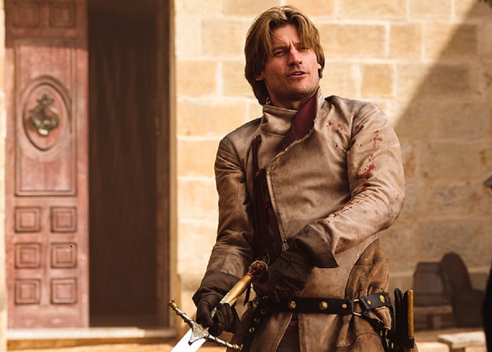

<!DOCTYPE html>
<html lang="tr">
<head>
    <meta charset="UTF-8">
    <meta http-equiv="X-UA-Compatible" content="IE=edge">
    <meta name="viewport" content="width=device-width, initial-scale=1.0">
    <title>Kodluyoruz - HTML</title>
</head>
<body>
    
</body>
</html>
<html>

<body style="background-color:khaki;"></body>

<h1>Oğuz Keskin</h1>
<!--ctrl+ö ile kısa yoldan yapabiliriz -->
<h3>Hakkımda</h3>
<p>Merhaba,Ben Oğuz Keskin! İstanbul'da yaşıyorum. Matematik ve Bilgisayar Bilimleri 3.Sınıf öğrencisiyim. Fantastik diziler ve filmler izlemeyi seviyorum. Web geliştirme ile ilgileniyorum. Kodluyoruz sayesinde harika şeyler öğrendim ve kendimi geliştirmeye devam ediyorum.</p>
<hr>
<h2> <strong>İlgi Alanlarım</strong></h2>
<!--İlgi alanlarım hakkında-->
<ol>
    <li>
        Film İzlemek
    </li>
    <ul>
        <li><a href="https://www.imdb.com/title/tt0117571/" target="_blank">Scream</a></li>
        <li><a href="https://www.imdb.com/title/tt1193516/" target="_blank">Recep İvedik</a></li>
    </ul>
<br>
    <li>Dizi İzlemek</li>
    <ul>
        <li><a href="https://www.imdb.com/title/tt0944947/" target="_blank">Game of Thrones</a></li>
        <li><a href="https://www.imdb.com/title/tt5753856/" target="_blank">Dark</a></li>
    </ul>
    <br>

    <li>
        Kitap Okumak
    </li>
    <ul>
        <li><a href="https://www.goodreads.com/tr/book/show/11687690-taht-oyunlar" target="_blank">A Song of Ice And Fire</a></li>
    </ul>
</ol>
<hr>
<!-- Dizi Bilgisi-->
<h1>Sevdiğim Diziler</h1>
<!--Dizinin Adı-->
<h2>Game of Thrones</h2>
<!--Dizi hakkında açıklama-->
<p>
    Yazların onlarca yıl, kışların ise bir ömür sürebildiği bir diyar, içten içe nifakla kaynamaktadır. Köklerini saldıkları topraklar kadar soğuk ve sert olan Starklar'ın kalesi Kıştepesi'nin kuzeyinde, Yedi Krallık'ı koruyan Sur'un ardında tekinsiz güçler toplanmaktadır. Kuşkulu bir ölümün ardından kralı ve dostu tarafından saltanat makamı olan güneye çağrılan Eddard Stark kendisini Demir Taht'ı arzulayanların baş döndürücü entrikalarının arasında bulur. Dostuyla düşmanını, gerçekle yalanı ayırt edemez olan Eddard'ın ne kıyısında yürüdüğü uçurumdan, ne de Ejderkrallar'ın soyundan gelen sürgün Targaryen kardeşlerin taştan ejder yumurtaları ve soylu atların sırtında serpilen iktidar düşlerinden haberi vardır. Kış, Starklar ve yandaşları için olduğu kadar Yedi Krallık için de uğursuz alametlerle gelmektedir. Taht mücadeleleri her zamankinden daha sert geçecektir.
</p>

<!--Dizideki Favori Karakterim-->
<h3>Dizideki Favori Karakterim</h3>
<ul>
    <li>
        <strong>Jaime Lannister </strong>: Jaime Lannister, bilinen adıyla <strong>"Kral Katili" </strong>, Lannister Hanedanı'ndan Lord Tywin Lannister ve Lady Joanna Lannister'nın ilk oğulları ve ikinci çocuklarıdır. On beş yaşında, Deli Kral Aerys II Targaryen'in Kral Muhafızı olarak seçilmiştir. Robert İsyanı'nın sonlarına yakın kralına ihanet edip Kral Aerys'i öldürürken aşağılayıcı <strong>"Kral Katili"</strong> lakabını kazanır.
    </li>
</ul>

<!--Jaime Lannister'ın bir fotoğrafı-->


<h3>İletişim</h3>
<li>
    <a style="color: black;" target="_blank" href="mailto:keskinoguz75@gmail.com"> 
    Mail
    </a>
</li>
<li>
    <a style="color: black;" target="_blank" href="tel:rastgele">
    Gsm
    </a>
</li>
<br>
<li>
<a style="color: blue;" href="#footer">
    SAYFANIN EN ÜSTÜNE ÇIK
</a>
</li>

</body>
</html>